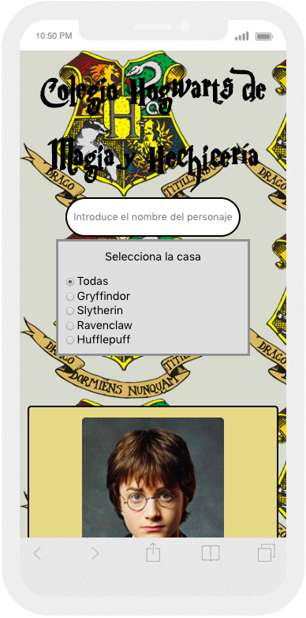
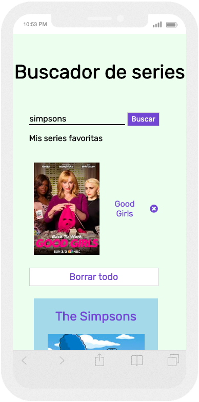
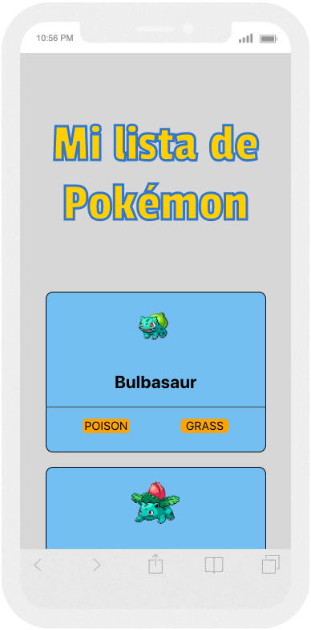

-
Web corporativa

Web corporativa para la presentación del equipo de trabajo desarrollada con HTML, CSS3 y SCSS.
-
Awesome profile cards

Aplicación web para crear tarjetas de visitas personalizadas. Realizada con HTML, SCSS y JavaScript.
-
Código heredado

Web para la personalización de tarjetas de visitas. Migración del código de una aplicación de JavaScript a React.
-
Stack-NFQ

Aplicación web para los desarrolladores de Nfq Solutions, donde plantear y responder preguntas. Realizada con React, JSX, SCSS y material-ui.
-
Buscador Hogwarts
Buscador web para la búsqueda de personajes de Harry Potter. Realizado con React y SCSS.
-
Buscador de series
Aplicación web para la búsqueda de personajes series de televisión y selección de favoritos. Realizado con HTML, SCSS y JavaScript.
-
Pokédex
Visualizador de pokemon realizado con HTML, SCSS y JavaScript.